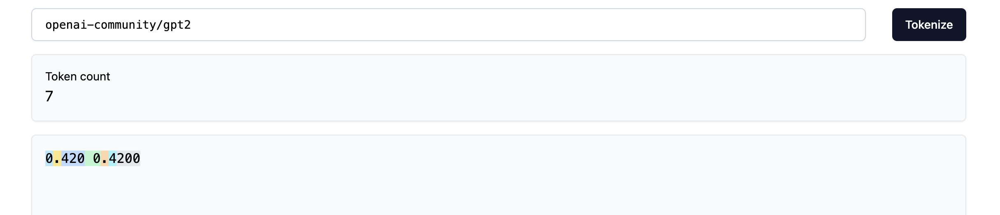

str = "만나서 반가워요. 저는 OpenAI에서 개발한 대규모 언어 모델인 ChatGPT입니다. 궁금한 것이 있으시면 무엇이든 물어보세요."
len(str)72Augustas Macijauskas
April 19, 2024
Although it might seem like the title is just me giving in to the popular trends in naming things in the ML space, it is not actually that misleading. Tokenization is a crucial part of the whole language modelling pipeline. Yet, we will see in this blog post that there all sorts of problems that tokenization can cause that one might not be aware of.
This post is inspired by the amazing video on LLM tokenizers by Andrej Karpathy.
Karpathy’s list of problems (taken from the following notes):
<|endoftext|>? Tokenization.trailing whitespace? Tokenization.SolidGoldMagikarp? Tokenization.I will use the trailtoken tool that I have recently built with a collaborator to inspect why these problems occur. I encourage you to play around with it, especially if you build tokenizers from scratch yourself. You might be surprised with how easily problems can occur if one is not careful enough!
Let’s dive in!
Tokenization makes it hard for the LLMs to spell. For example, one of the best open-source LLMs, Mistral-7B-Instruct, has a very hard time spelling the word antidisestablishmentarianism:
However, if we use trailtoken to inspect how the said word is tokenized by the Mistral-7B tokenizer, we see that it is actually split into 8 seemingly random tokens:
It is unlikely that the model has seen them occurring together during training, so it no surprise that it finds it hard separating out the letters constituting each token.
On the other hand, the OpenAI models seem to handle the task with ease (see these following links for gpt-3.5-turbo and gpt-4-turbo). Even then, this is mostly a result of the capabilities of these models, as the word is still tokenized into 6 tokens which are again more or less arbitrary:
Here and below I use the Xenova/gpt-3.5-turbo tokenizer on trailtoken because it is an open-source implementation of the gpt-3.5-turbo tokenizer.
Similarly to spelling words, LLMs find it hard to to simple string operations, such as reversing words. A well-known example is asking LLMs to reverse the word lollipop. Mistral-7B fails miserably on the task:
If we look at how the word is tokenized, we see that it ends up being only 4 tokens, so it is no wonder that the LLMs find it hard solving this task:
The screenshot above hints at a “hack” that can be used to help LLMs: separate out the letters so that they end up as separate tokens after tokenization. Even then, few-shot examples are required to make it work (and it also did not work when I separated the letters using dashes '-' or spaces ' '):
Interestingly, gpt-4 fails reversing the string too, so it is truly a problem caused by tokenization!
For the curious reader, there are many other seemingly “simple” operations that LLMs struggle with. One such example is try to count the number of letter in a word:
Can you think of any other tasks where LLMs might struggle?
It turns out that not all tokenizers are equally good at tokenizing non-English text, be it materials in foreign languages or code. I put these two together because they are very similar in nature, which is that training tokenizers on unbalanced text corpuses makes them worse at tokenizing the under-represented pieces of text (I might write a separate post on this, so stay tuned!).
Let’s see this in action. The following piece of text is taken from Karpathy’s video referenced above. The text states something like “Nice to meet you, I’m ChatGPT, a large-scale language model developed by OpenAI. If you have any questions, feel free to ask.” in Korean.
str = "만나서 반가워요. 저는 OpenAI에서 개발한 대규모 언어 모델인 ChatGPT입니다. 궁금한 것이 있으시면 무엇이든 물어보세요."
len(str)72We can see that the string is made up of 72 characters. Let’s see how the older GPT-3 tokenizer would handle this:
We find that the resulting number of tokens is 132, much more than the original length of the string! This is because the tokenizer probably did not see much Korean during training, so it did not learn to represent the Hanguls (Korean “letters”) in the Korean alphabet efficiently (we see that the first Hangul is represented by three tokens).
On the other hand, the GPT-4 tokenizer is much better at Korean, the resulting number of tokens is 61 (more 2x less!), meaning that the Korean Hanguls are better represented in the larger tokenizer vocabulary:
However, the problem still remains. If we inspect how the English version of the same phrase is tokenizer, we find another 2x reduction in the number of tokens:
Therefore, poor tokenization means that the “information density” of non-English tokens is much lower, so LLMs have to attend to longer sequences to process the same amount of information, though the fact that they have probably seen much less non-English data during training also significantly contributes to the problem.
Same thing goes for code. We find that the original code string is 197 characters:
code_str = '''for i in range(1, 101):
if i % 3 == 0 and i % 5 == 0:
print("FizzBuzz")
elif i % 3 == 0:
print("Fizz")
elif i % 5 == 0:
print("Buzz")
else:
print(i)
'''
len(code_str)197The GPT-3 tokenizer compresses the string reasonably well, but there are a few areas for improvement. For instance, we see that every space of indentation is a separate token, so we waste a lof of tokens. Similarly, keywords like elif are broken into two tokens which is not ideal.
Just as before, the GPT-4 tokenizer is much better at this, as we see in the image below. The indentation spaces are now grouped into a single token, and the elif keyword is a single token as well. The resulting tokenization saves about 30 tokens for the given piece of code. Imagine what the savings would be for a very large codebase!
There is no doubt that these improvements in the tokenizer have contributed to the much improved coding and multilingual performance of the GPT-4 model.
This is going to be a brief one, but LLM tokenizers can do odd things when tokenizing numbers which can hinder their performance on simple arithmetic. For example, here is the GPT-2 tokenizer behaves on the following numbers:

We find that in one case the decimal is one token, but becomes two tokens if an extra 0 is appended at the end. This would not cause any trouble to us humans, but could potentially confuse the LLM.
However, most of the modern LLM tokenizers are quite robust at handling numbers.
How structured data tokenized is another source of peculiar behaviours in LLMs. For example the images below show how the Mistral-7B tokenizer handles JSON and YAML formats:
As we can see, we can save up on tokens (about 2x!) and overall complexity if we use YAML over JSON. Also, notice how using underscores in key names adds extra tokens, so being smart about how structured data is passed to the tokenizer can help reduce the number of tokens used and, therefore, the compute costs!
Finally, I want to briefly touch upon the few remaining problems on Karpathy’s list which have either been solved completely or are very rare if one is careful enough.
Why did my LLM abruptly halt when it sees the string <|endoftext|>?
<|endoftext|> is a special tokens which hints LLMs that they should stop generating text, so if you accidentally put that into the model, it might halt abruptly. Simple string processing techniques can help deal with such edge cases most of the time, though that sometimes leads to undesired behaviours, such as the one below which likely happens because OpenAI’s tokenizers remove special tokens from the input string during pre-processing:
What is this weird warning I get about a trailing whitespace?
The two images below will help us better understand what’s going on:
We can see that in the first image, the trailing space becomes a separate token. However, the tokenizers often concatenate words the the spaces before them, just like the for word once in the second image. Since models are trained to predict the next token, during training the learn to predict the token once from the tokens that go before it up to the colon :, so the case where they have to predict the token once following a space ' ' is completely out of distrubution for them and can lead to all kinds of peculiar behaviours.
Why did the LLM break if I ask it about SolidGoldMagikarp?
This problem was quite hilarious, but the researchers at OpenAI trained their olders tokenizers on Reddit data and SolidGoldMagikarp is a Reddit user with lots of posts, so their username became a separate token in the LLMs vocabulary, but the same data did not make it into the training data, so the models behave more or less randomly if they ever see this token because they have never been trained to handle them.
To summarize, the tokenization process of the language modelling pipeline should not be neglected and can lead to poor LLMs performance, undesired behaviours or even safety issues. However, I would like to challenge a few of Andrej Karpathy’s statements from the conclusion of the video. In particular:
tiktoken library and use the GPT-4 tokenizer. While this is true, I believe that there are also a lot of great tokenizers in the open-source realm, e.g. the new LLaMA 3 tokenizer seems to take most of the consideration from this post into account.tokenizers library. It has functionality to both train tokenizers and run them in inference mode, it is super fast because it is written in Rust, and the documentation is also rather approachable in my opinion. In fact, I plan to do a deep dive on tokenization using this library where the end goal would be to replicate the LLaMA 3 tokenizer as closely as possible.Quick footnote: in his video on on building LLMs in 2024 Thomas Wolfe video suggests that things are not as hopeless as they might seem and argues that as long as we are reasonably thoughtful about the tokenization process, the problems above can be avoided for the most part. He also adds that one should not spend too much time on this step of building a language model as it is not something that can bring one to building AGI üòÖ.
I just want to highlight some resources that I read in more or less detail while writing this article (they are also mentioned in Andrej Karpathy’s video):